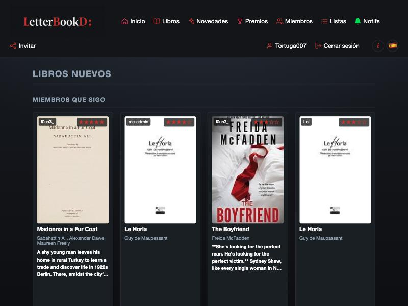

Inicio
Para qué sirve: Ver de un vistazo qué se mueve en tus clubs: quién acaba de añadir qué libro y con qué nota. Es tu punto de partida tras iniciar sesión y la principal puerta de entrada a las nuevas lecturas de los demás miembros.

Recorrido
La página se abre con «Libros nuevos», dividida en dos secciones: «Miembros que sigo» (los miembros que has marcado como favoritos) y «Otros miembros» (el resto de miembros de tus clubs). Cada ficha muestra la portada, el nombre de usuario del miembro, su nota en estrellas, el título, el autor y el inicio de su reseña. Haz clic en una portada para ver la ficha del libro; haz clic en el nombre de usuario para ver el perfil del miembro.
Cadenas de acción
Cada fila describe un disparador en la interfaz, el modal o formulario que abre, y el efecto producido.
| Disparador | Modal / Campos | Efecto |
|---|---|---|
| Barra de navegación superior | Enlaces: Inicio, Libros, Novedades, Premios, Miembros, Listas, Notifs (campana verde si hay algo por leer), Invitar. Lado derecho: Moderación (solo visible si eres administrador), nombre de usuario (perfil), Cerrar sesión, botón «i» (Acerca de), botón de bandera (idioma). | Cada enlace abre la página correspondiente. La campana de «Notifs» se vuelve verde si tienes notificaciones sin leer. |
| Clic en una portada o en un título de libro | — | Abre la ficha detallada del libro: reseñas, nota media, botones para puntuar, sugerir y añadir a una lista. |
| Clic en un nombre de usuario | — | Abre el perfil del miembro (sus lecturas, reseñas y listas visibles en vuestros clubs en común). |